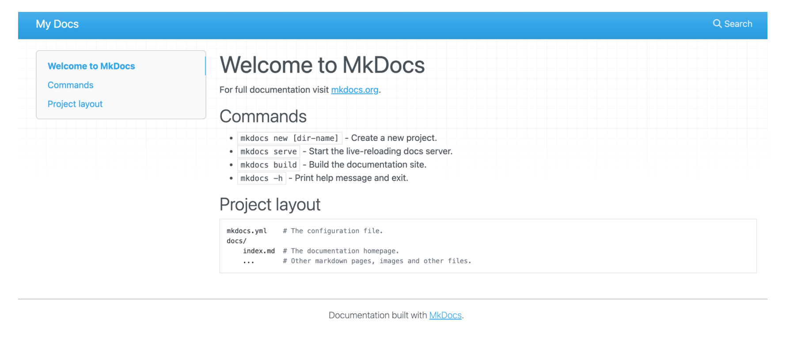
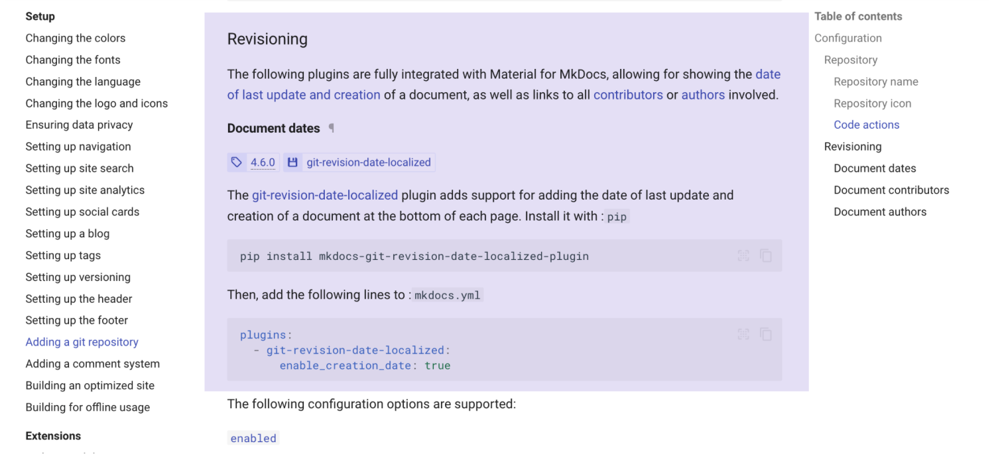

MkDocs¶

主题配置：Material for MkDocs
本地调试：
(base) .. mkdocs-site % mkdocs -h
Usage: mkdocs [OPTIONS] COMMAND [ARGS]...
MkDocs - Project documentation with Markdown.
Options:
-V, --version Show the version and exit.
-q, --quiet Silence warnings
-v, --verbose Enable verbose output
--color / --no-color Force enable or disable color and wrapping for the output. Default is auto-
detect.
-h, --help Show this message and exit.
Commands:
build Build the MkDocs documentation.
get-deps Show required PyPI packages inferred from plugins in mkdocs.yml.
gh-deploy Deploy your documentation to GitHub Pages.
new Create a new MkDocs project.
serve Run the builtin development server.
文件组织形式¶
(base) ... docs % tree
.
├── Error # 文件夹
│ └── 报错.md # markdown文件
├── Leecode
│ └── 力扣.md
├── home
│ ├── page-1.md
│ └── page-2.md
├── index.md
├── mkdocs
│ ├── css
│ │ ├── no-footer.css
│ │ └── unordered-list-symbols.css
│ └── javascripts
│ └── katex.js
└── 便签 # 文件夹
├── TODO # 图床
│ ├── 1.png
│ └── image-20241115095446260.png
├── TODO.md #markdown文件
├── mkdocs_learn
│ └── image-20241115100605111-1636372-1636377.png
├── mkdocs_learn.md
└── 备忘.md
10 directories, 14 files
前段与后端的对应

添加页面创建时间、最后一次修改时间¶

写作¶
更多写作
Note
This is a note.
Tip
This is a tip.
Warning
This is a warning.
Danger
This is a danger.
Success
This is a success.
Info
This is a info.
Quote
This is a quote.
What is the meaning of life, the universe, and everything?
mkdocs命令¶
mkdocs new [dir-name]- Create a new project.mkdocs serve- Start the live-reloading docs server.mkdocs build- Build the documentation site.mkdocs -h- Print help message and exit.
Project layout
mkdocs.yml # The configuration file.
docs/
index.md # The documentation homepage.
... # Other markdown pages, images and other files.
一些修改¶
- 本地文件和在线文件的存储问题，上传上去的本地怎么管理，又不能完全在线
等你写得多到占用本地太多空间再说吧，笑）
- 图床 & typora& vscode&github
typora 可以自动创建图床文件夹
好复杂，再说吧
- 文档标题加编号（可以但没必要，新建CSS文件，然后在yml配置文件中引用
- mkdocs的文件组织结构
docs/文件夹（导航栏）/（起个别名）/文件夹/文件夹/md文件
docs/文件夹（导航栏）/文件夹（左侧栏下拉条）/md文件
docs/文件夹（导航横栏）/md文件（左侧栏）/一级标题（标题处）/二级标题（目录从二级标题开始显示）
一级标题直接会显示在左侧栏，或者在yml文件中起别名
- 英文文本 两端对齐(以后再说吧，人家都没弄，我也不折腾了)
- 这个主题超好看，有空折腾一下
- git push origin main每次push就会把所有文件的时间全部更改了
改对了！重新把整个 工作流文件复制了别人的一份。
- 文件结构变了，记得修改yml的路径
嵌入 pdf 文档并显示¶
如何在github页面上mkdocs生成的网站中嵌入本地pdf文件？

（1）修改配置文件：
markdown_extensions:
- pymdownx.pathconverter:
base_path: 'docs/pdf_files' # 设置基础路径为你的 PDF 文件所在目录
absolute: false # 将路径不转换为绝对路径
tags: 'a script img link object embed' # 需要转换路径的 HTML 标签
（2）新建 markdown 文件，嵌入 pdf 链接即可，注意路径的配置，嵌入链接的方法和嵌入外链的逻辑是一样的，只是这里设置的本地的（指的是 现在 工作的路径）相对路径
我最开始的报错是，路径错了；还有
absolute: false这里设置成 false
mkdocs & mermaid¶
项目地址：https://github.com/fralau/mkdocs-mermaid2-plugin
另附 ：Mermaid 在线编辑器
可以正确解析：

第一步：终端安装
第二步：更新配置文件：
第三步：修改一下主题
- pymdownx.superfences:
custom_fences:
- name: mermaid
class: mermaid
format: !!python/name:mermaid2.fence_mermaid_custom
需要注意的问题：上面的缩进，非常容易报错，AI 自动给输出的全文本内容会有删减，细心点吧。
具体的位置：

示例代码 ```mermaid
graph TD
classDef component fill:#e2f0cb,stroke:#333,stroke-width:1px
classDef operation fill:#ffd6cc,stroke:#333,stroke-width:1px
%% 类层次结构
ClassA[ClassA]:::component
ClassB[ClassB]:::component
%% 初始化关系
subgraph 初始化过程
I_B[创建ClassB实例]:::operation --> I_A[创建ClassA实例]:::operation
end
%% 方法调用关系
ClassA -- "调用" --> ClassB
ClassA.method_a -- "调用" --> ClassB.method_b
正确解析出的效果
graph TD
classDef component fill:#e2f0cb,stroke:#333,stroke-width:1px
classDef operation fill:#ffd6cc,stroke:#333,stroke-width:1px
%% 类层次结构
ClassA[ClassA]:::component
ClassB[ClassB]:::component
%% 初始化关系
subgraph 初始化过程
I_B[创建ClassB实例]:::operation --> I_A[创建ClassA实例]:::operation
end
%% 方法调用关系
ClassA -- "调用" --> ClassB
ClassA.method_a -- "调用" --> ClassB.method_b
远程仓库渲染 mermaid¶
本地 localhost 能够渲染 mermaid，提交到远程仓库，工作流文件总是报错

解决：修改工作流文件，安装 mermaid。